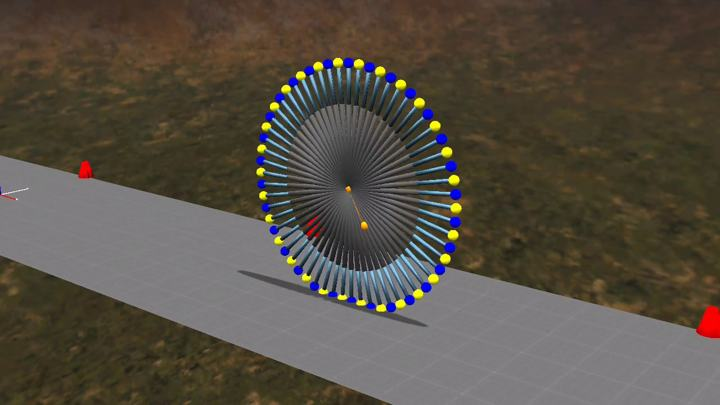
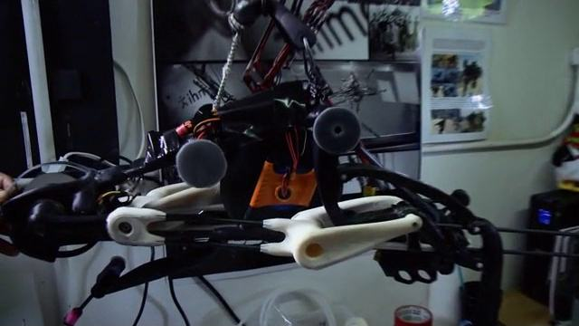
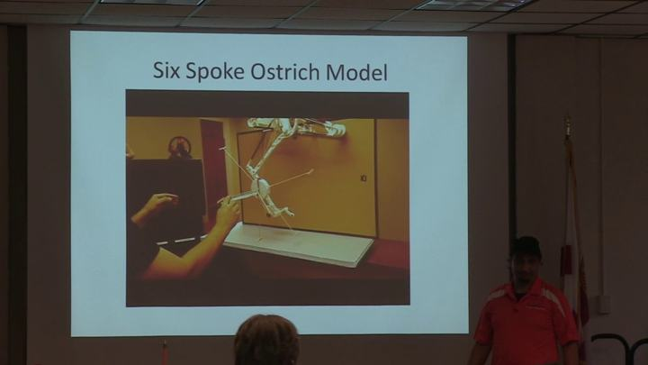
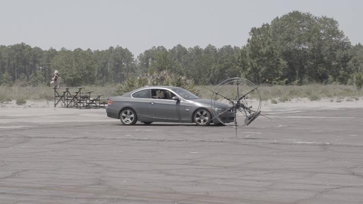
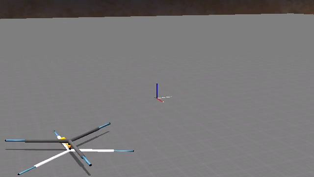

Cut the rim off a wheel and you get the simplest walking machine there is. Johnny's robots are built on this picture: legs are “virtual spokes” and the body hangs like a pendulum from the hub.

11 s
Hex Wheel, multi legs (simulation) · open on YouTube · Media: Xobotix / Chance Robotics. Needs internet.
Plain language Each time a spoke hits the ground, the wheel loses some speed. Going downhill gives that energy back. When the two balance, the wheel rolls at a steady speed by itself, with no motor and no brain. Fewer spokes means bigger steps and bigger losses per hit, so it needs a steeper hill.
Interactive
Rimless wheel on a ramp
Energy lost per step…
Step length (1 m spokes)…
Steady speed after impact…
Try this
Start at 8 spokes and 6°. Drop to 4 spokes: what happens to the energy lost per step?
Find the smallest ramp angle that keeps 4 spokes rolling.
Give the 16-spoke wheel a kick: does it settle back to the same speed? That return is the stable limit cycle.
Then go to Lesson 3: two spokes that swing freely make a walker.
Graduate layer · EEE 6734 Rimless wheel (McGeer 1990; Coleman, Chatterjee & Ruina 1997): stance is an inverted pendulum φ̈ = (g/l) sin φ. With inter-spoke angle 2α, angular momentum about the new contact gives ω⁺ = cos(2α) ω⁻, so a fraction 1 − cos²(2α) of the kinetic energy is lost per step. The slope supplies ΔE ∝ 4 (g/l) sin γ sin α, which gives the fixed point ω⁻² = 4 (g/l) sin γ sin α / (1 − cos²2α). Free the two spokes to swing and you have the compass-gait walker of Lesson 3. In Johnny's terms, the SLIP model is “one spoke of our wheel” (Part 5, 02:26).
More from the Xobotix channel

28 s
"running is geometric, it's like a wheel" · FastRunner on Discovery Channel · open on YouTube · Media: Xobotix / Chance Robotics. Needs internet.

45 s
Spoked wheel on the treadmill at dimensionless velocity 8 · FastRunner lecture, Part 4 · open on YouTube · Media: Xobotix / Chance Robotics. Needs internet.

HexRunner record run

Hex Wheel 3D simulation
Media: Xobotix / Chance Robotics
From the Xobotix lectures
“the hex Runner was designed to get everyone to see in a physical way that running is geometric it's like a wheel the robot acts like it's a pendulum hanging from that point”
Discovery Channel feature on Johnny Godowski · 01:37 · auto-captions, [corrections] ours
“not a hub up here in a whole wheel but just the robot and zigzag segmented legs that are constrained and driven to March and step with those virtual spokes”
“the ostrich is resonant to two three spoke wheels like this … each time it spins once around it's six steps”
Johnny Godowski, Part 4 · 00:48 · auto-captions, [corrections] ours
Quotes are YouTube auto-captions from the Xobotix channel. [Brackets] mark our corrections of misheard words, and timestamps open the video at that spot. Full notes: research/SCIENCE_FROM_LECTURES.md.